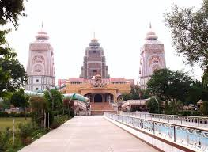
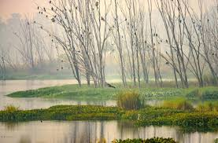
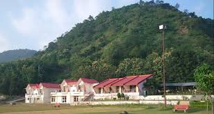
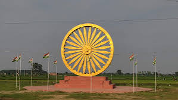
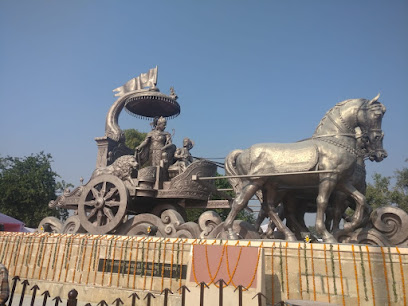
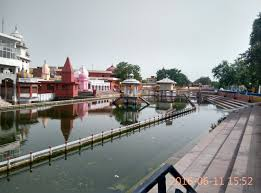
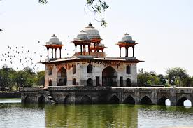

Major Cities and Urban Centers
Chandigarh
- Rock Garden: An expansive garden featuring sculptures and art made from industrial and urban waste.
- Sukhna Lake: A man-made reservoir offering boating and scenic views, perfect for leisure activities.
- Rose Garden: The largest rose garden in Asia, home to thousands of varieties of roses and other plants.
- Government Museum and Art Gallery: A museum showcasing a rich collection of Gandharan art and Indian contemporary art.
- Chandigarh Haat: A vibrant marketplace featuring local handicrafts, textiles, and food.
- Sector 17 Plaza: A bustling commercial center known for shopping, dining, and entertainment options.
Gurugram
- Kingdom of Dreams: A spectacular live entertainment destination featuring musicals and theatrical performances.
- Cyber Hub: A vibrant dining and entertainment complex with restaurants, cafes, and shops.
- Sheetala Mata Mandir: A revered temple dedicated to Sheetala Mata, attracting many devotees and visitors.
- Ambience Mall: One of the largest malls in Gurugram, offering shopping, dining, and entertainment options.
- Aravalli Golf Course: A picturesque golf course set amidst the Aravalli hills, ideal for golf enthusiasts.
- Sohna Road: A bustling area known for its nightlife, restaurants, and shopping experiences.
Faridabad
- Sukhna Lake: A scenic lake perfect for picnics and boating, surrounded by beautiful gardens.
- Surajkund Lake: Famous for the annual Surajkund International Crafts Mela, this picturesque lake offers stunning views.
- ISKCON Temple: A vibrant temple dedicated to Lord Krishna, known for its beautiful architecture and peaceful ambiance.
- Tughlaqabad Fort: A historic fort offering a glimpse into the region's past and stunning views of the surroundings.
- Town Park: A well-maintained park ideal for morning walks and relaxation, featuring green spaces and pathways.
- Raja Nahar Singh Palace: A magnificent palace showcasing rich architectural heritage, now a cultural landmark.
Panipat
- Panipat Museum: A museum showcasing the rich history of the city, including artifacts from the battles fought here.
- Battlefield Memorial: A memorial commemorating the historic battles of Panipat, surrounded by lush gardens.
- Bhima Devi Temple: An ancient temple dedicated to Goddess Bhima, known for its intricate stone carvings.
- Shah Jahan Mosque: An exquisite mosque built during the Mughal era, known for its beautiful architecture.
- Kalender Shah's Tomb: The tomb of a revered Sufi saint, set in serene surroundings.
- Indri-Trini Distillery: A famous distillery known for producing high-quality whiskey, offering tours and tastings.
Hisar
- Firoz Shah Palace: A historic palace built by Firoz Shah Tughlaq, showcasing impressive architecture and ruins.
- Rani Talab: A scenic lake surrounded by gardens, ideal for relaxation and picnics.
- Archaeological Museum: A museum housing artifacts and exhibits related to the history of Hisar and surrounding regions.

- Gandhi Bagh: A well-maintained garden featuring various plants, walking paths, and a serene atmosphere.
- Jindal Park: A popular park with recreational facilities and spaces for family outings.
- Hisar Fort: An ancient fort that offers insights into the city's historical significance and architectural styles.
Historical and Archaeological Sites
Kurukshetra
- Brahma Sarovar: A sacred water body believed to cleanse sins, surrounded by ancient temples.
- Jyotisar: The site where Lord Krishna is said to have delivered the Bhagavad Gita to Arjuna.
- Kurukshetra Panorama and Science Centre: A museum that showcases the history of the Mahabharata and scientific exhibits.
- Shree Krishna Museum: A museum dedicated to the life and teachings of Lord Krishna, featuring artifacts and exhibits.
- Arjun Temple: A historic temple believed to be built by the Pandavas, located near the battlefield.
- Iskcon Temple: A beautiful temple dedicated to Lord Krishna, known for its vibrant spiritual atmosphere and community activities.
Pinjore
- Pinjore Gardens: Also known as Yadavindra Gardens, these are beautifully landscaped Mughal-style gardens that date back to the 17th century.
- Pinjore Fort: A historical fort showcasing traditional architecture, offering a glimpse into the region's rich heritage.
- Shiv Mandir: An ancient temple dedicated to Lord Shiva, known for its serene ambiance and intricate carvings.
- Baba Mohan Ram Temple: A revered temple dedicated to Baba Mohan Ram, attracting numerous visitors seeking blessings.
- Historic Sites Museum: A museum showcasing artifacts and exhibits related to the historical significance of the region.
- Gurudwara Nada Sahib: A sacred Sikh shrine located nearby, known for its spiritual ambiance and community service.
Mahendragarh
- Adhya Shakti Temple: An ancient temple dedicated to Goddess Durga, known for its intricate carvings and spiritual significance.
- Mahendragarh Fort: A historic fort that dates back to the 18th century, offering stunning views and insights into the region's history.
- Bhimgarh Fort: An archaeological site with ruins of an ancient fort, showcasing the architectural styles of the past.
- Raja Nahar Singh Palace: A historic palace that reflects the rich heritage and architecture of the region.
- Suraj Kund: An ancient water reservoir with archaeological significance, surrounded by lush greenery.
- Ancient Stepwell: A historical stepwell known for its intricate architecture and cultural importance.
Wildlife and Nature
Sultanpur National Park
- Birdwatching: A popular spot for birdwatchers, home to over 250 species of migratory and resident birds.
- Nature Trails: Well-maintained trails for visitors to explore the rich flora and fauna of the park.
- Wetland Ecosystem: The park features a unique wetland ecosystem, providing habitat for various aquatic birds.
- Visitor Center: An informative center providing details about the park's biodiversity and ongoing conservation efforts.
- Photography Opportunities: Ideal for nature photographers to capture stunning landscapes and wildlife.
- Guided Tours: Available for visitors who want to learn more about the park's ecology and wildlife.
Kalesar National Park
- Wildlife: Home to various species, including leopards, deer, and numerous bird species, making it a haven for wildlife enthusiasts.
- Flora: The park is rich in biodiversity, featuring dense forests of sal, khair, and other native trees.
- Trekking and Nature Walks: Offers picturesque trails for trekking and exploring the serene beauty of the landscape.
- Bird Watching: A popular activity in the park, attracting bird watchers from all over the region.
- Adventure Activities: Opportunities for camping and exploring the rich wildlife in a safe environment.
- Scenic Views: Stunning viewpoints within the park provide breathtaking vistas of the surrounding landscape.
Bhindawas Wildlife Sanctuary
- Bird Watching: A haven for bird watchers, with over 200 species of migratory and resident birds.
- Flora and Fauna: Home to diverse wildlife including deer, jackals, and various reptiles.
- Natural Trails: Scenic trails for nature walks and exploring the sanctuary's rich biodiversity.

- Photography Opportunities: Ideal for capturing stunning wildlife and landscape photography.
- Visitor Centre: A facility providing information about the sanctuary and its inhabitants.
- Seasonal Activities: Various activities during different seasons, including guided tours and educational programs.
Morni Hills
- Morni Fort: A historic fort that offers stunning views of the surrounding hills and valleys, perfect for nature lovers.
- Morni Lake: A beautiful lake ideal for boating and enjoying serene landscapes, surrounded by lush greenery.
- Wildlife Sanctuary: Home to various species of flora and fauna, providing opportunities for bird watching and nature walks.

- Hiking Trails: Several trails for trekking and hiking, offering breathtaking views and encounters with local wildlife.
- Picnic Spots: Ideal locations within the hills for family picnics amidst nature.
- Flora and Fauna: Diverse plant life and wildlife, including various bird species, making it a paradise for nature enthusiasts.
Yamunanagar
- Shivalik Wildlife Sanctuary: A beautiful sanctuary that is home to diverse flora and fauna, ideal for nature lovers and wildlife enthusiasts.
- Yamuna Nagar Forest Reserve: A serene forest area offering opportunities for bird watching and nature trails.
- Raja Nahar Singh Palace: While primarily a historical site, the palace is surrounded by lush gardens that attract various bird species.

- Morni Hills: A scenic hill station near Yamunanagar, perfect for trekking and enjoying panoramic views of the surroundings.
- Chhota Pahad: A hill area known for its rich biodiversity and tranquil environment, ideal for hiking and exploring nature.
- Kalesar National Park: A national park featuring rich wildlife and various trails for nature walks and exploration.
Pilgrimage and Religious Sites
Kurukshetra
- Brahma Sarovar: A sacred water tank, believed to be the site where Lord Brahma created the universe.
- Jyotisar: The place where Lord Krishna is said to have delivered the Bhagavad Gita to Arjuna.
- Shri Krishna Museum: A museum dedicated to Lord Krishna, showcasing artifacts and exhibits related to his life and teachings.

- Sthaneshwar Mahadev Temple: An ancient temple dedicated to Lord Shiva, believed to be the place where he is worshipped by the gods.
- Bhagavad Gita Trust: A spiritual center dedicated to the teachings of the Bhagavad Gita, offering meditation and yoga sessions.
- ISCON Temple: A vibrant temple dedicated to Lord Krishna, known for its beautiful architecture and spiritual activities.
Pehowa
- Shri Brahma Sarovar: A sacred water tank believed to be created by Lord Brahma, where many pilgrims come for spiritual rituals.
- Pehowa Fort: An ancient fort that holds historical significance, offering insights into the region's past.
- Jain Temple: A beautiful temple dedicated to Jain Tirthankaras, known for its intricate carvings and peaceful ambiance.

- Haveli of Pehowa: A traditional haveli that showcases the rich culture and history of the region.
- Sukhna Lake: A serene lake ideal for meditation and relaxation, surrounded by lush greenery.
- Temples of Pehowa: Numerous temples dedicated to various deities, making it a significant religious hub.
Narnaul
- Raja Nahar Singh Palace: A historic palace that also serves as a venue for religious and cultural events.
- Shah Satnam Ji Ashram: A spiritual retreat dedicated to Saint Shah Satnam Ji, attracting many devotees for meditation and worship.
- Bhagat Singh Park: A peaceful park with a memorial dedicated to Bhagat Singh, often visited for reflection and prayer.

- Jain Temple: A beautifully crafted temple dedicated to Jain Tirthankaras, known for its intricate carvings.
- Gurudwara Bhatinda Sahib: A significant Sikh shrine, drawing devotees for its spiritual ambiance and community service.
- Shri Laxmi Narayan Mandir: A popular temple dedicated to Lord Vishnu and Goddess Laxmi, frequented by locals and pilgrims alike.
Adventure and Nature Activities
Morni Hills
- Trekking: Explore the scenic trails that wind through the hills, suitable for both beginners and experienced trekkers.
- Bird Watching: Enjoy the diverse bird species in the area, making it a perfect spot for bird enthusiasts.
- Camping: Experience the beauty of nature by camping under the stars in designated camping areas.
- Rock Climbing: Challenge yourself with rock climbing activities available for all skill levels.
- Nature Walks: Enjoy guided nature walks to learn about the local flora and fauna.
- Paragliding: Experience the thrill of flying and get a bird's eye view of the stunning landscape.
Sultanpur National Park
- Bird Watching: A paradise for bird enthusiasts, with a variety of migratory and resident bird species.
- Nature Trails: Explore scenic walking paths through lush landscapes and diverse flora.
- Photography: Capture stunning photographs of wildlife and picturesque landscapes.
- Guided Tours: Join expert-led tours to learn about the park's ecology and wildlife.
- Cycling: Enjoy cycling on designated trails amidst the serene natural environment.
- Wildlife Spotting: Keep an eye out for deer, jackals, and various other wildlife species.